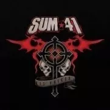

La banda fue formada por el cantautor Deryck Whibley y el ex batería Steve "Stevo" Jocz bajo el nombre de Kaspir. Antes de unirse a la banda, Jocz fue parte de otra banda y entonces Whibley estaba convencido de que era el mejor batería del lugar. Un año después se unió Dave "Brownsound" Baksh como guitarrista líder y, después de tocar con varios bajistas, reclutaron a Jason "Cone" McCaslin para completar el grupo. El grupo, entonces Kaspir, solía realizar versiones de la banda NOFX. Los integrantes de la agrupación decidieron cambiar el nombre de esta para un concierto de Supernova el 28 de septiembre de 1996, cuando entonces se cumplían cuarenta y un días de iniciarse el verano
| Discos | Año | Canciones |
|---|---|---|
All Killer No Filler |
2001 | Introduction To Destruction, Nothing On My Back, Never Wake Up, Fat Lip, Rhythms, Motivation, In Too Deep, Summer, Handle This, Crazy Amanda Bunkface, All She's Got, Heart Attack |
Does This Look Infected? |
2002 | The Hell Song, Over My Head (Better Off Dead), My Direction, Still Waiting, A.N.I.C., No Brains, All Messed Up, Mr. Amsterdam, Thanks For Nothing, Hyper-Insomnia-Para-Condrioid, Billy Spleen, Hooch |
Chuck |
2004 | No Reason, We're All To Blame, Angels With Dirty Faces, Some Say, The Bitter End, Open Your Eyes, Slipping Away, I'm Not the One, Welcome to Hell, Pieces, There's No Solution, 88 |
Underclass Hero |
2007 | Underclass Hero, Walking Disaster, Speak Of The Devil, Dear Father, Count Your Last Blessings, Ma Poubelle, March Of The Dogs, The Jester, With Me, Pull The Curtain, King Of Contradiction, Best Of Me, Confusion And Frustration In Modern Times, So Long, Goodbye |
Screaming Bloody Murder |
2011 | Reason To Believe, Screaming Bloody Murder, Scumfuck, Time For You To Go, Jessica Kill, What Am I to Say?, Holy Image Of Lies, Sick of Everyone, Happiness Machine, Crash, Blood In My Eyes, Baby You Don't Wanna Know, Back Where I Belong, Exit Song, We're The Same |
|  13 Voices |
2016 | A Murder of Crows, Goddamn I'm Dead Again, Fake My Own Death, Breaking the Chain, There Will Be Blood, 13 Voices, War, God Save Us All (Death to POP), The Fall and the Rise, Twisted by Design |